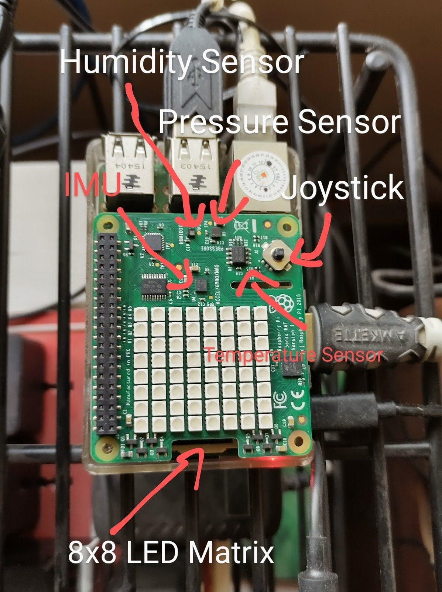

What is a Raspberry Pi?

A Raspberry Pi is a small computer. This computer is in the size of your hand but can do many things like Browsing the web, Writing Documents, Playing Games and much more! The surprising part that all kids will LOVE is that it comes with a basic version of Minecraft which is made by Mojang!
Get it now!
https://www.amazon.in/dp/B07BDR5PDW/ref=cm_sw_r_cp_apa_glt_fabc_JXKYVFWRXCN4F6JQ0VXH (Raspberry Pi 3B+)
https://www.amazon.in/Raspberry-Pi-8GB-Desktop-Computer/dp/B08B9XS3B6/ref=sr_1_3?dchild=1&keywords=raspberry+Pi&qid=1621064158&sr=8-3 (Raspberry Pi 4)
What is a Sense Hat?

A Sense Hat is an addition to the Raspberry Pi. It connects to the GPIO pins and has an 8x8 LED Matrix, Environmental Sensors and some Moving Sensors too!
Get it now!
https://www.amazon.in/Raspberry-Pi-Sense-Hat-Astro-Pi-Expansion/dp/B01CNZ9ML2/ref=sr_1_3?dchild=1&keywords=Sense+Hat&qid=1621064255&sr=8-3